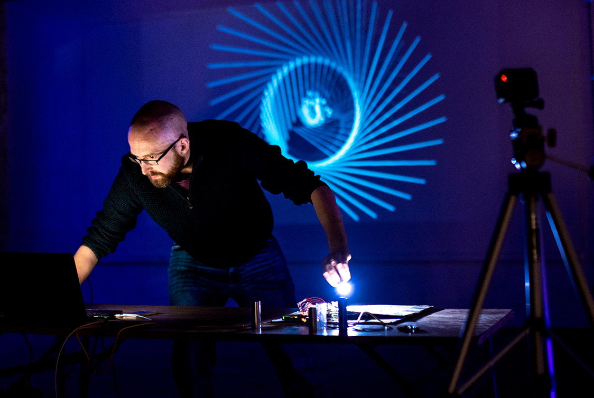

Curriculum Vitae
Updated July 2026.
Download PDF
Composer • Creative Technologist • Performance Artist
Richard McReynolds is a Belfast-born composer, creative technologist, and performance artist based in Cardiff. His work explores embodied interaction through sound, movement, and digital technology, creating performances, instruments, and installations where gesture becomes a musical and visual language.
Download CVRichard McReynolds is a Northern-Irish composer, multi-media artist and creative producer based in Cardiff. He works in the intersection between media, exploring new connections between performance, sound and visuals. His work encompasses sound-works, generative images, hyper-instruments and installations.
Richard McReynolds is a Belfast-born composer and multimedia artist living in Cardiff. His current interest is how technology can blur artistic mediums. Recent projects include: visualising sound, generating still images from sonic input, creating electronic instruments to track physical movement and designing light-tracking installations. His performances engage on a visual and sonic level. His installation works invite the audience to play with sound, movement and digital control in active and embodied ways. Self-taught while playing in bands as a teenager, his formal music education began at Liverpool Hope University. It was here that he learned studio techniques and scoring for music ensembles. He continued at Liverpool Hope for Masters study before moving to Cardiff to study for a PhD. Since completing his PhD in 2019, he has worked freelance as an arts organiser and composer. Richard sees the role of the composer as a facilitator of music as much, if not more than, a writer of scores. He organises concerts, arts events and collaborations. He co-founded newCELF, an interdisciplinary arts company that commissions new artworks and showcases them alongside contemporary classics. In 2020, Funded by the Arts Council of Wales, they commissioned 6 artists and created an online platform to present work. They have since included an additional 60 artists from around the world. In 2019 they organised a 9-day tour of Wales after receiving over 150 new submissions in an international call for works. He is one of the founding members of the Hooting Cow Collective. They are an international group of composers and performers who explore improvisation, experimental scoring and how to collaborate despite geographical distance. They have organised concerts and workshops in China, Thailand, and the UK. Throughout his career, Richard has had his pieces performed in workshops by The Sixteen, Liverpool Philharmonic Performers, The Carducci Quartet, Rarescale, Lontano Ensemble, Psappha, and Joanna MacGregor. Richard's music has been programmed in concerts by The Hard Rain Soloist Ensemble, The E-Mex ensemble, Cardiff Contemporary Music Group and The Signum Quartet.
Explain your artistic practice, interests, and philosophy here.
Updated July 2026.
Download PDFHigh-resolution publicity image.
Download ImageBiography, photographs and promotional material.
Download ZIP{kind=link}